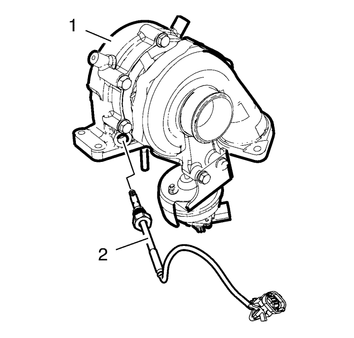

Sustitución del sensor de temperatura de escape - Posición 1
Herramientas especiales
EN-50429 Herramienta de desmontaje y montaje del sensor de temperatura de escape del adaptador
Si desea informarse sobre herramientas regionales equivalentes, consultar Herramientas especiales .
Procedimiento de desmontaje
- Desmontar la pantalla de protección del motor. Consultar Sustitución del protector del motor .
- Extraiga la pantalla térmica del turbocompresor. Consultar Sustitución de la pantalla térmica del turbocompresor .
- Desmonte el tubo flexible de ventilación positiva del cárter del cigüeñal. Consultar Sustitución del tubo/tubería/tubo flexible de ventilación positiva del cárter del cigüeñal .
- Retire el conducto de salida del purificador de aire. Consultar Sustitución del conducto de salida del filtro de aire .

- Desemborne la posición 1 del enchufe del mazo de cables del sensor de temperatura de escape del mazo de cables del motor.
- Retire la posición 1 del sensor de temperatura de escape (2) del turbocompresor (1) con el adaptador EN-50429.
Procedimiento de montaje
Precaución:Consulte Precaución con las fijaciones en la sección Prólogo.
- Monte la posición 1 del sensor de temperatura de escape (2) en el turbocompresor (1) con el adaptador EN-50429. Apriete la posición 1 del sensor de temperatura de escape (2) a 45 N·m (33 lib. pie).
- Emborne la posición 1 del enchufe del mazo de cables del sensor de temperatura de escape al mazo de cables del motor.
- Monte el conducto de salida del filtro de aire. Consultar Sustitución del conducto de salida del filtro de aire .
- Monte el tubo flexible de ventilación positiva del cárter del cigüeñal. Consultar Sustitución del tubo/tubería/tubo flexible de ventilación positiva del cárter del cigüeñal .
- Monte la pantalla térmica del turbocompresor. Consultar Sustitución de la pantalla térmica del turbocompresor .
- Monte el protector del motor. Consultar Sustitución del protector del motor .
| © Copyright Chevrolet. All rights reserved |